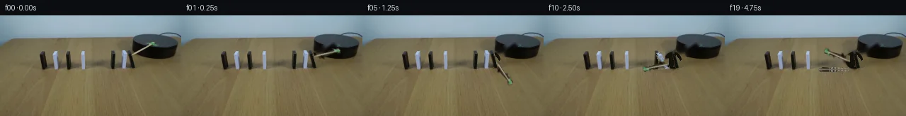

![首帧]()

Round 00
2026-11-06T02:41:18.567125+00:00像素候选变化代码 +315/−0inspection 更新
pixels 57b4b8905ec55e5c · code d4f10a3add2d60d5
查看本轮 generate.py 真实 diff
--- previous/generate.py
+++ current/generate.py
@@ -0,0 +1,315 @@
+#!/usr/bin/env python3
+"""PixelWorld-Text case_0050 generator.
+
+Scene: two rows of alternating black/white dominoes on a wooden table with a
+wide gap between rows; a wooden stick attached to a black disk platform rotates
+clockwise about a small black hub and knocks the nearest (white) domino. The
+near row (W3, B3) topples left; the far row stays standing because the gap is
+wider than a domino length.
+
+Pure local pixel work: cv2 Telea inpainting for the static background, RGBA
+sprites extracted from frame 0 (stick streak + two near-row dominoes), analytic
+rotation about measured pivots, soft analytic cast shadows. Frame 00 is an
+exact untouched copy of first_frame.png.
+"""
+from pathlib import Path
+import numpy as np
+from PIL import Image, ImageDraw, ImageFont
+import cv2
+from scipy.ndimage import gaussian_filter
+import artifact_io
+
+CASE = Path(__file__).parent
+npz_work = CASE / '.tmp'
+npz_work.mkdir(exist_ok=True)
+
+# ---------------------------------------------------------------- geometry --
+F0 = np.array(Image.open(CASE / 'first_frame.png').convert('RGB')).astype(np.float64)
+H, W = F0.shape[:2]
+assert (H, W) == (144, 256)
+
+PIVOT = np.array([182.3, 63.8]) # stick rotation hub (x, y)
+HUB_R = 12.0 # hub circle radius
+TH0 = np.radians(-38.0) # initial stick angle
+DOM_BASE_Y = 77.0 # domino foot line
+DOM_H = 26.0 # domino height
+
+# near-row dominoes: (name, body rect x0,x1,y0,y1, fall pivot x, width)
+W3 = dict(rect=(169.5, 186.5, 47.5, 81.0), body=(170.5, 179.0, 49.5, 76.5),
+ px=175.0, light=True)
+B3 = dict(rect=(151.5, 171.0, 47.5, 82.5), body=(155.0, 164.0, 50.5, 76.5),
+ px=159.5, light=False)
+
+# ----------------------------------------------------------------- helpers --
+def lum(img):
+ return 0.299 * img[..., 0] + 0.587 * img[..., 1] + 0.114 * img[..., 2]
+
+def bilinear(img, x, y):
+ """Bilinear sample of HxW(x3 or x1) float image at scalar coords."""
+ xi = np.clip(x, 0, W - 1.001).astype(np.float64)
+ yi = np.clip(y, 0, H - 1.001).astype(np.float64)
+ x0 = np.floor(xi).astype(int); y0 = np.floor(yi).astype(int)
+ fx = xi - x0; fy = yi - y0
+ x1 = np.minimum(x0 + 1, W - 1); y1 = np.minimum(y0 + 1, H - 1)
+ if img.ndim == 3:
+ fx = fx[..., None]; fy = fy[..., None]
+ return (img[y0, x0] * (1 - fx) * (1 - fy) + img[y1, x0] * (1 - fx) * fy +
+ img[y0, x1] * fx * (1 - fy) + img[y1, x1] * fx * fy)
+
+def smoothstep(e0, e1, x):
+ t = np.clip((x - e0) / (e1 - e0), 0, 1)
+ return t * t * (3 - 2 * t)
+
+# --------------------------------------------- static clean background (f0) --
+L0 = lum(F0)
+Yg, Xg = np.mgrid[0:H, 0:W]
+dist_hub = np.hypot(Xg - PIVOT[0], Yg - PIVOT[1])
+
+mask = np.zeros((H, W), np.uint8)
+
+# 1) original stick footprint polygon (angle TH0), s in [8,48], halfwidth 7
+u0 = np.array([np.cos(TH0), np.sin(TH0)])
+v0 = np.array([-np.sin(TH0), np.cos(TH0)])
+ss = (Xg - PIVOT[0]) * u0[0] + (Yg - PIVOT[1]) * u0[1]
+tt = (Xg - PIVOT[0]) * v0[0] + (Yg - PIVOT[1]) * v0[1]
+stick_poly = (ss >= 8) & (ss <= 48) & (np.abs(tt) <= 7)
+mask[stick_poly] = 1
+
+# 2) near-row domino bodies + cast shadows
+for d in (W3, B3):
+ x0, x1, y0, y1 = d['rect']
+ m = (Xg >= x0) & (Xg <= x1) & (Yg >= y0) & (Yg <= y1)
+ mask[m] = 1
+
+# protect hub pixels that are genuinely dark in frame 0 (real hub stays put)
+hub_real = (dist_hub < HUB_R - 0.2) & (L0 < 55)
+mask[hub_real] = 0
+
… diff truncated; 228 more lines …